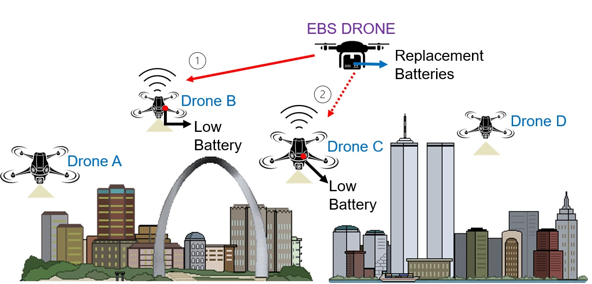
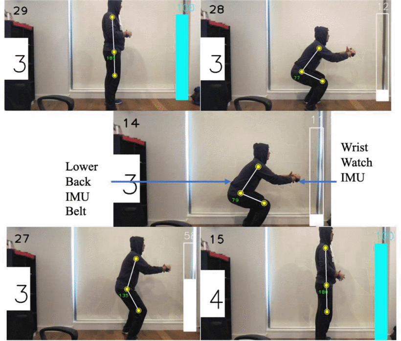
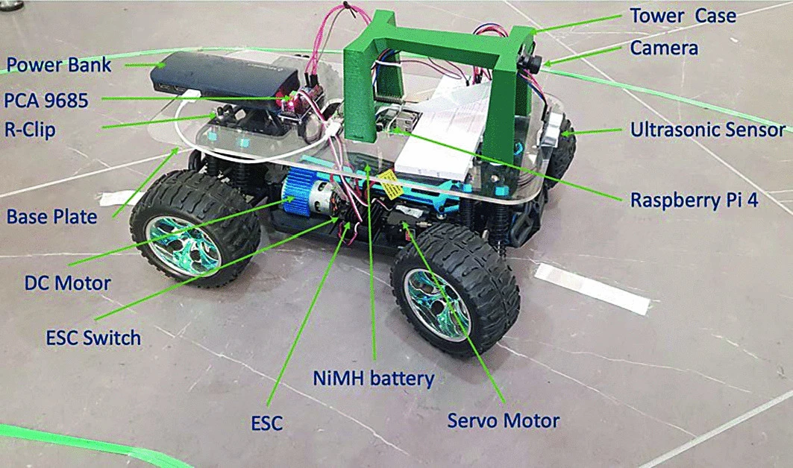

Research
For a complete list of my scholarly publications from IoT, robotics, and sensors among many others, please refer my Google Scholar page .
2024
FlyCount: High-Speed Counting of Black Soldier Flies Using Neuromorphic Sensors
IEEE Sensors Journal
Alice James, Avishkar Seth, A. Marcireau, S. Mukhopadhyay, T. Hu, and R. Atayde
IEEE Sensors Journal, Early Access , 2024. doi: 10.1109/JSEN.2024.3504289
Paper Link

MecQaBot: A Modular Robot Sensing and Wireless Mechatronics Framework for Education and Research
IEEE ICST '2024
Alice James, Avishkar Seth, Subhas Mukhopadhyay.
IEEE International Conference on Sensing Technology , 2024.
Paper Link

AeroBridge: Autonomous Drone Handoff System for Emergency Battery Service
ACM MobiCom '2024
Avishkar Seth, Alice James, Endrowednes Kuantama, Richard Han, Subhas Mukhopadhyay.
ACM MobiCom , 2024.
Paper Link

Cooperative Drone Delivery via Push-based Lift with Payload Stabilization
arXiv preprint arXiv:2403.16430
Alice James, Avishkar Seth, Endrowednes Kuantama, Richard Han, Subhas Mukhopadhyay.
Mobisys, DroNet , 2024.
Paper Link
Autonomous Drone Coordination in RF-denied Environments through Leader-Follower Systems and Computer Vision
2024 International Conference on Advanced Robotics and Mechatronics (ICARM)
Endrowednes Kuantama, Alice James , Avishkar Seth
ICARM , 2024.
Paper Link

Cooperative Drone Payload Delivery with Self Balancing Tray
2024 International Conference on Advanced Robotics and Mechatronics (ICARM)
Alice James , Avishkar Seth, Endrowednes Kuantama, Richard Han, Subhas Mukhopadhyay
ICARM , 2024.
Paper Link
Flying IoT: Sensor Fusion Performance Analysis for UAV Applications in Indoor Spaces
Book: IoT Sensors, ML, AI and XAI: Empowering A Smarter World
Alice James , Avishkar Seth, Natalia Chatrath, Endrowednes Kuantama, Richard Han, Subhas Mukhopadhyay
Springer , 2024.
Paper Link

2023
Aerodynamics and Sensing Analysis for Efficient Drone-Based Parcel Delivery
16th International Conference on Sensing Technology, 2023
Avishkar Seth, Alice James, Endrowednes Kuantama, Subhas Mukhopadhyay, and Richard Han.
IEEE Xplore, 2023.
Paper Link
Sensor Fusion for Autonomous Indoor UAV Navigation in Confined Spaces
16th International Conference on Sensing Technology, 2023
Alice James, Avishkar Seth, Endrowednes Kuantama, Subhas Mukhopadhyay, and Richard Han.
IEEE Xplore, 2023.
Paper Link
Flying Watchdog-Based Guard Patrol with Check Point Data Verification
MDPI Future Internet Journal 2023
Endrowednes Kuantama, Avishkar Seth, Alice James, Yihao Zhang.
Future Internet, 15, 340. 2023.
Paper Link

RLaGA: A Reinforcement Learning Augmented Genetic Algorithm For Searching Real and Diverse Marker-Based Landing Violations
arXiv preprint arXiv:2310.07378
Linfeng Liang, Yao Deng, Kye Morton, Valtteri Kallinen, Alice James, Avishkar Seth, Endrowednes Kuantama, Subhas Mukhopadhyay, Richard Han, Xi Zheng.
arXiv Software Engineering (cs.SE) , 2023.
Paper Link

Drone High-Rise Aerial Delivery
MDPI Drones Journal 2023
Seth, Avishkar, Alice James, Endrowednes Kuantama, Subhas Mukhopadhyay, and Richard Han.
Drones 7, no. 5: 300. 2023.
Paper Link
2022
Vertical Trajectory Analysis Using QR Code Detection for Drone Delivery Application
International Conference on Sensing Technology
Seth, Avishkar, Alice James, Endrowednes Kuantama, Subhas Mukhopadhyay, and Richard Han.
Springer Nature Switzerland , 2022.
Paper Link

IoT System Design: Project Based Approach
Book: Smart Sensors, Measurement and Instrumentation Journal
Alice James, Seth, Avishkar, Subhas Mukhopadhyay.
Springer, Cham , 2022.
Book Link
TrackInk: An IoT-Enabled Real-Time Object Tracking System in Space
MDPI Sensors Journal 2022
Aume, Cameron, Keith Andrews, Shantanu Pal, Alice James, Avishkar Seth, and Subhas Mukhopadhyay.
Sensors 22, no. 2: 608. , 2023.
Paper Link

2021
Realtime Hand Landmark Tracking to Aid Development of a Prosthetic Arm for Reach and Grasp Motions
IEEE International Symposium on Robotic and Sensors Environments, ROSE 2021
Alice James, Avishkar Seth, Subhas C. Mukhopadhyay
Paper Link
Wearable Sensing System to perform Realtime 3D posture estimation for lower back healthcare
IEEE International Symposium on Robotic and Sensors Environments, ROSE 2021
Avishkar Seth, Alice James, Subhas Mukhopadhyay
Paper Link

Autonomous Ground Vehicle for Off-the-Road Applications Based on Neural Network
Proceedings of International Conference on Computational Intelligence and Computing
Avishkar Seth, Alice James, Subhas Mukhopadhyay
Paper Link

2020
1/10th scale autonomous vehicle based on convolutional neural network
International Journal on Smart Sensing and Intelligent Systems
Avishkar Seth, Alice James, Subhas Mukhopadhyay
Paper Link
IoT enabled sensor node: a tutorial paper
International Journal on Smart Sensing and Intelligent Systems
Alice James, Avishkar Seth, Subhas C. Mukhopadhyay
Paper Link